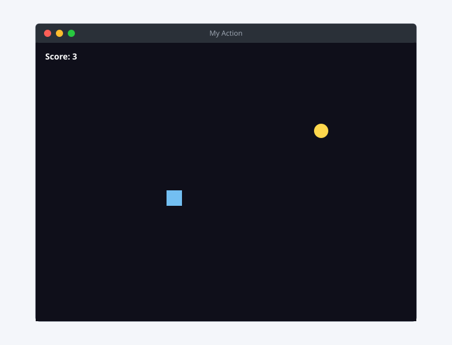
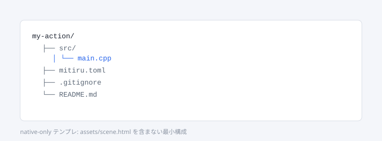
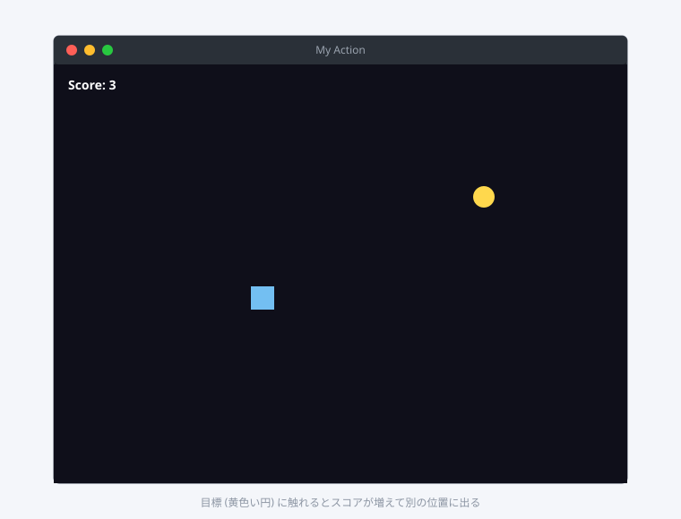

「画面の上で何かを動かす」を、C++ だけで作るチュートリアルです。mitiru new が生成するひな型（ゲーム DLL）を読んで、少しずつ書き換えていきます。HTML/CSS の UI は次の 02 で扱います。
時間の目安は 20 〜 30 分。事前に はじめに を済ませ、mitiru doctor が OK を返すことを確認してください。
できあがるもの
- 暗い背景の上を動く矩形プレイヤー (32 × 32 px)
- 矢印キーで 4 方向に移動
- 画面の端を超えない (壁との当たり判定)
- 小さい黄色い円を 1 個出して、触れたら得点 +1 + 別の場所に再配置
- 左上にスコア表示

手順 1: ひな型を作る
mitiru new my-action
cd my-action
mitiru new は ゲーム DLL のひな型を生成します。mitiru_host（エンジン本体の実行ファイル）が
この DLL を読み込んで動かす構成です。生成直後の src/main.cpp は、すでに「矩形を矢印キーで動かす」
動くサンプルになっています（HUD 付き）。まずはそれを走らせて、中身を読んでいきます。

手順 2: そのまま走らせて確認
mitiru run
初回は engine を取得して CMake configure が走るので 1 〜 2 分かかります。2 回目以降は秒で立ち上がります。 矢印キーで水色の矩形が動き、左上の HUD に座標が出れば成功です。
ホットリロードを使う:
mitiru runの代わりにmitiru watchで起動すると、src/を編集して保存した 瞬間に、ゲームを止めずに新しいコードへ差し替わります（プレイヤー位置などの状態はそのまま）。 以降の編集はこれを回しながらやると速いです。
手順 3: 中身を読む — GameMemory / on_update / on_draw
src/main.cpp の骨格はこうなっています（要点だけ抜粋）。
#include <mitiru/core/Screen.hpp>
#include <mitiru/module/ModuleApi.hpp>
namespace my_action
{
namespace vk { constexpr int Escape = 0x1B, Left = 0x25, Up = 0x26, Right = 0x27, Down = 0x28; }
// 状態はすべてここに置く。host がこのポインタを所有するので、
// ホットリロード（コードだけ差し替え）を跨いで生き残る。
struct GameMemory
{
float playerX = 640.0f;
float playerY = 360.0f;
};
// 毎フレーム呼ばれる。input は読み取り専用、intents に「お願い」を書く。
void on_update(void* memory, float dt,
const mitiru::module::InputSnapshot* input,
mitiru::module::FrameIntents* intents)
{
auto& mem = *static_cast<GameMemory*>(memory);
if (input->keysJustPressed[vk::Escape]) { intents->requestStop = 1; }
constexpr float kSpeed = 320.0f;
if (input->keysDown[vk::Left]) { mem.playerX -= kSpeed * dt; }
if (input->keysDown[vk::Right]) { mem.playerX += kSpeed * dt; }
if (input->keysDown[vk::Up]) { mem.playerY -= kSpeed * dt; }
if (input->keysDown[vk::Down]) { mem.playerY += kSpeed * dt; }
}
// 描画。screen は毎フレーム渡される。保持しない。
void on_draw(void* memory, mitiru::Screen* screen)
{
auto& mem = *static_cast<GameMemory*>(memory);
screen->clear(sgc::Colorf{0.06f, 0.07f, 0.12f, 1.0f});
constexpr float kSize = 32.0f;
screen->drawRect(sgc::Rectf{mem.playerX - kSize * 0.5f, mem.playerY - kSize * 0.5f, kSize, kSize},
sgc::Colorf{0.45f, 0.85f, 0.95f, 1.0f});
}
ファイル末尾の mitiru_module_load が、これらの関数を host に登録し、初回だけ GameMemory を確保します
（雛形のまま触らなくて大丈夫）。
ここまでで分かること:
- 状態は
GameMemory構造体に集約する。これが「唯一の状態」で、ホットリロードや録画再生（リプレイ）が この 1 つの構造体を memcpy するだけで成立する設計です（ADR 0005）。 on_update(memory, dt, input, intents)が毎フレームのロジック。input->keysDown[...]で押下を見て、intentsに「終了して」などの要求を書きます。host の object を直接呼ばない（C のみの signal flow）。on_draw(memory, screen)で描く。screen->drawRect(rect, color)のように C++ の関数を呼ぶ だけ。
手順 4: 速度を変えてホットリロードを体感する
mitiru watch を回したまま、kSpeed の 320.0f を 800.0f に変えて保存してみてください。
ウィンドウはそのまま、プレイヤーが即座に速くなります。ビルド → 再起動を待たずに数値を詰められるのが、
DLL 形式 + ホットリロードの利点です。
speed * dt で動かしているので、何 fps でも同じ速さになります（次のメモ参照）。
手順 5: 画面の端でぶつかる
on_update の末尾で位置をクランプします。
constexpr float kHalf = 16.0f; // プレイヤー半分
if (mem.playerX < kHalf) { mem.playerX = kHalf; }
if (mem.playerX > 1280.0f - kHalf) { mem.playerX = 1280.0f - kHalf; }
if (mem.playerY < kHalf) { mem.playerY = kHalf; }
if (mem.playerY > 720.0f - kHalf) { mem.playerY = 720.0f - kHalf; }
これだけで「壁との当たり判定」になります。プロトタイプ段階の衝突はこのレベルで足りることが多いです
（画面サイズは mitiru.toml の [window]。既定 1280×720）。
手順 6: 目標を出してスコアを足す
GameMemory に目標とスコアを足し、on_update で接触判定、on_draw で円とスコアを描きます。
乱数は再配置のたびに使いますが、リプレイ再現性のため GameMemory 内の単純な LCG で回します。
struct GameMemory
{
float playerX = 640.0f, playerY = 360.0f;
float targetX = 300.0f, targetY = 300.0f;
int score = 0;
unsigned rng = 0x12345678u;
};
inline float nextRand(GameMemory& m, float lo, float hi) // [lo, hi)
{
m.rng = m.rng * 1664525u + 1013904223u;
const float u = static_cast<float>((m.rng >> 8) & 0xFFFFFF) / 16777216.0f;
return lo + u * (hi - lo);
}
on_update の移動・クランプの後ろに当たり判定を足します。
const float dx = mem.playerX - mem.targetX;
const float dy = mem.playerY - mem.targetY;
if (dx * dx + dy * dy < 30.0f * 30.0f) { // 中心距離が近い = 接触
++mem.score;
mem.targetX = nextRand(mem, 40.0f, 1240.0f);
mem.targetY = nextRand(mem, 40.0f, 680.0f);
}
on_draw に目標の円とスコア文字を足します。
screen->fillCircle(mem.targetX, mem.targetY, 14.0f, sgc::Colorf{1.0f, 0.85f, 0.30f, 1.0f});
char buf[32];
std::snprintf(buf, sizeof(buf), "Score: %d", mem.score);
// drawTextInRect は rect が先、text、color の順。
screen->drawTextInRect(sgc::Rectf{16, 12, 240, 28}, buf, sgc::Colorf{1, 1, 1, 1});
mitiru run（または mitiru watch 中に保存）で動作確認:

何が分かったか
- ゲームの状態は
GameMemory構造体に集約し、on_update/on_drawの 2 つに C++ だけでロジックを書く。 - 入力は
InputSnapshot（読み取り専用）、副作用はFrameIntents（host へのお願い）。host の object は直接呼ばない。 mitiru watchで 編集が即反映される。状態は GameMemory に閉じ込めているので reload を跨いで生き残る。- HTML / CSS / JS は このチュートリアルでは 1 行も書いていない。
HUD やメニューの 見た目 を HTML/CSS で凝りたくなったら、次の 02 画面に UI を出す へ。
実は mitiru new の雛形には最初から HUD が付いているので、02 ではその仕組みを読み解いて作り替えます。
次の一歩
- プレイヤーを 画像 にする:
Texture::fromFile+screen->drawSprite(...)。examples/anchor等が実例。 - 時間制限:
GameMemoryに経過秒を持ち、on_drawで残り時間を表示。 - 動く実物:
examples/breakout/examples/anchorは同じ DLL 形式を、より薄いGame.hppラッパで書いたものです。